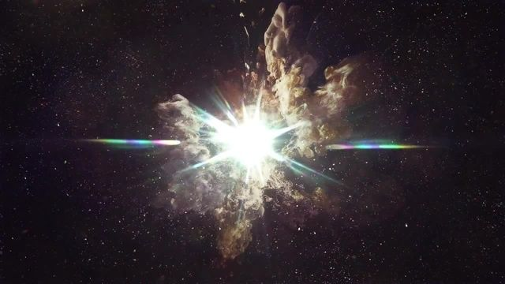
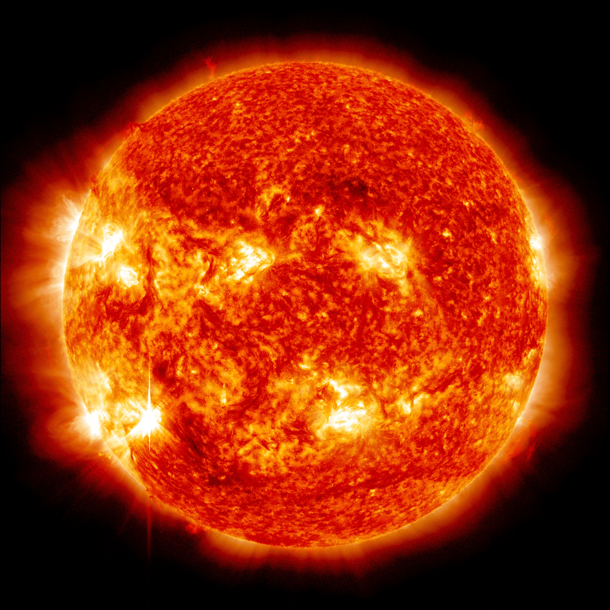
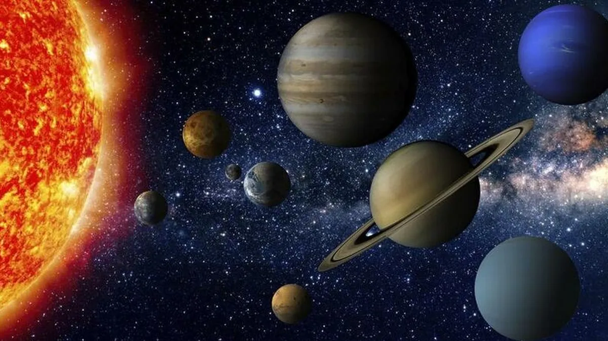
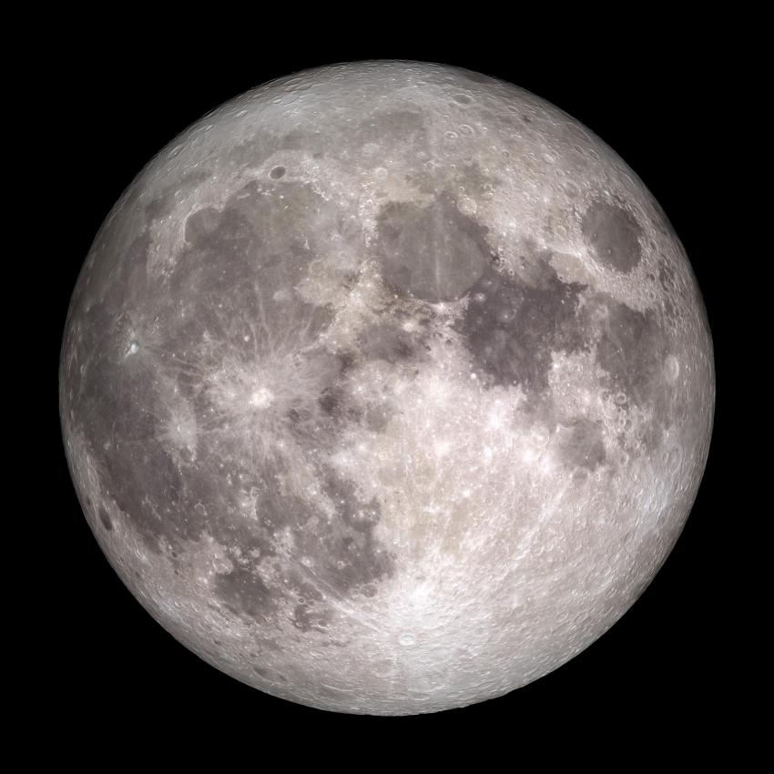
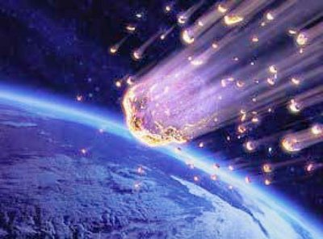
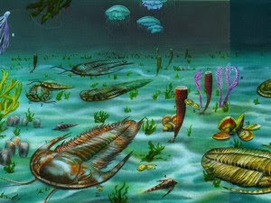
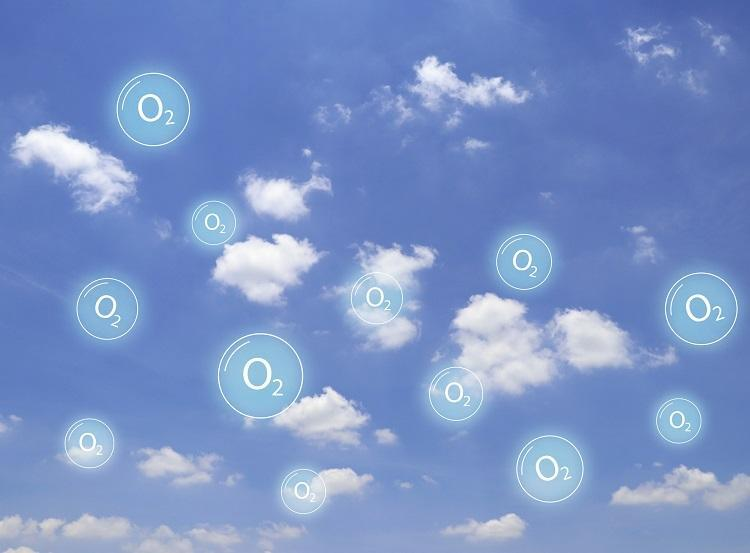
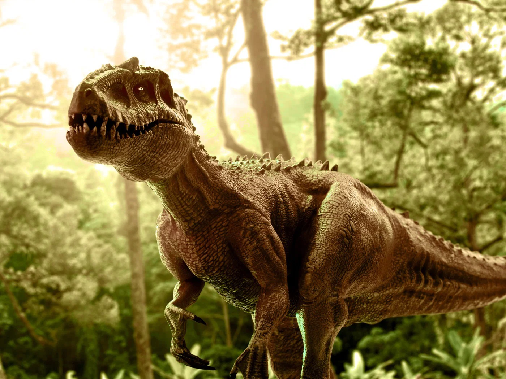
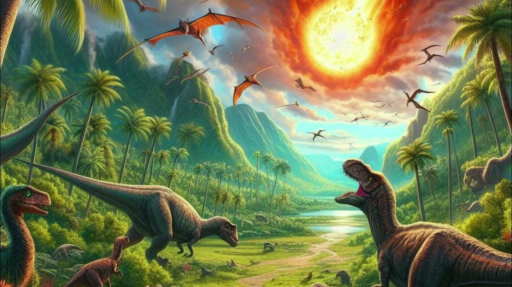
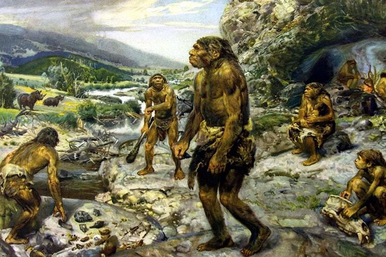

Big Bang
13,8 bilhões de anos atrás. O universo nasce a partir de uma grande explosão. Nos primeiros instantes, o espaço, o tempo e a matéria se expandem rapidamente, dando origem às primeiras partículas e, depois, às primeiras estrelas e galáxias.

Nebulosa Solar
4,6 bilhões de anos atrás. Uma enorme nuvem de gás e poeira interestelar começa a colapsar sob sua própria gravidade. Essa nebulosa forma um disco giratório que dará origem ao Sol e aos planetas.

Formação do Sol
O centro da nebulosa aquece cada vez mais até que a pressão e a temperatura disparem. O Sol nasce quando a fusão nuclear de hidrogênio começa no núcleo, liberando energia e iluminando o Sistema Solar primitivo.

Formação dos Planetas
Partículas de poeira e gelo se colidem e se agregam em pequenos corpos chamados planetesimais. Esses corpos crescem até formar os planetas rochosos e gasosos que hoje orbitam o Sol.

Formação da Lua
Um grande impacto entre a Terra e um corpo do tamanho de Marte lança detritos ao espaço. Esse material se reúne em torno da Terra e forma a Lua, que passa a orbitar nosso planeta.

Bombardeamento de Meteoros
Vários corpos celestes atingem os planetas jovens, deixando crateras e alterando superfícies. Esse bombardeamento traz também gases e água que ajudam a moldar atmosferas e possíveis oceanos.

Primeiras Formas de Vida
Há cerca de 3,8 bilhões de anos surgem nos oceanos os primeiros microrganismos. Essas formas de vida simples começam a transformar o ambiente químico da Terra e a criar bases para ecossistemas futuros.

Oxigênio na Atmosfera
Organismos fotossintetizantes liberam oxigênio como subproduto. A quantidade de oxigênio cresce, transformando a atmosfera e permitindo o desenvolvimento de formas de vida mais complexas.

Dinossauros
Durante milhões de anos, grandes répteis dominam a Terra. No período Triássico, Jurássico e Cretáceo, uma enorme variedade de dinossauros evolui em diferentes habitats pelo planeta.

Extinção dos Dinossauros
Há 66 milhões de anos, um asteroide atinge a Terra e provoca incêndios, tsunamis e nuvens de poeira. A queda da temperatura e a falta de luz provocam a extinção em massa de muitas espécies.

Seres Humanos
Surgem os primeiros ancestrais dos seres humanos modernos. Esses hominídeos desenvolvem ferramentas, fogo e linguagem, abrindo caminho para a civilização humana.